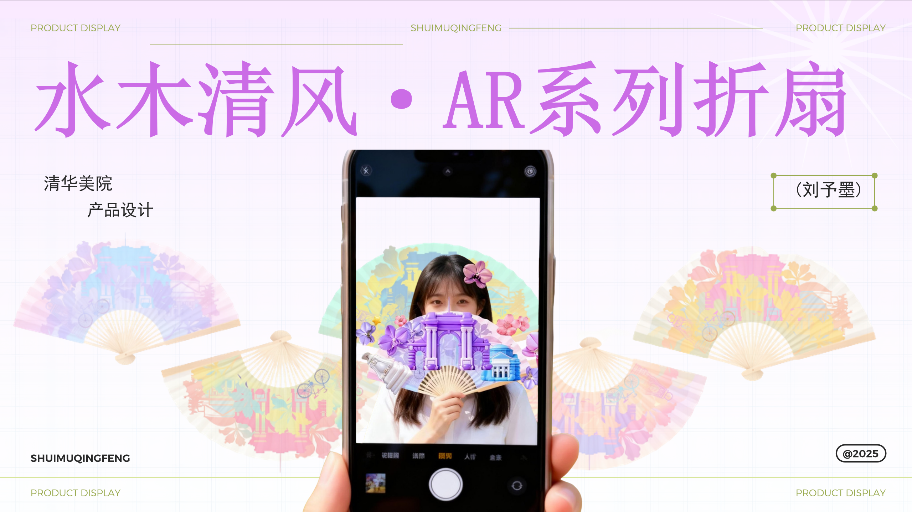
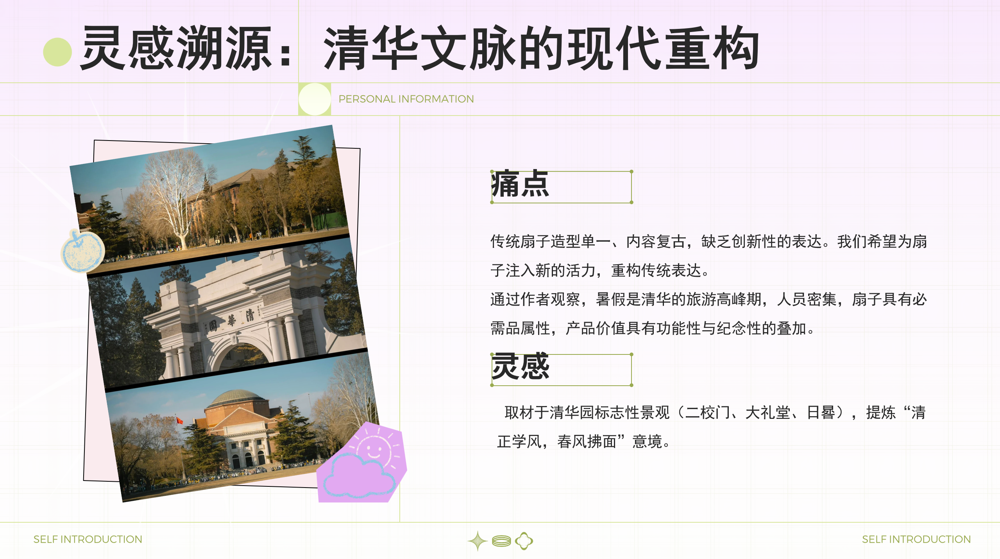
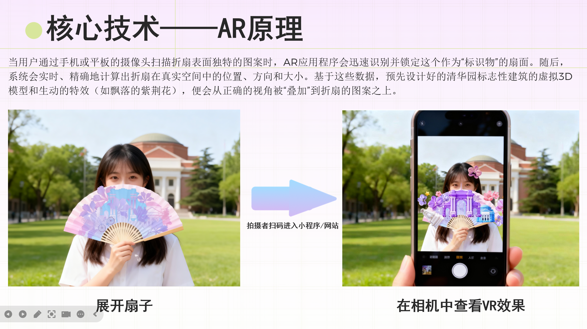
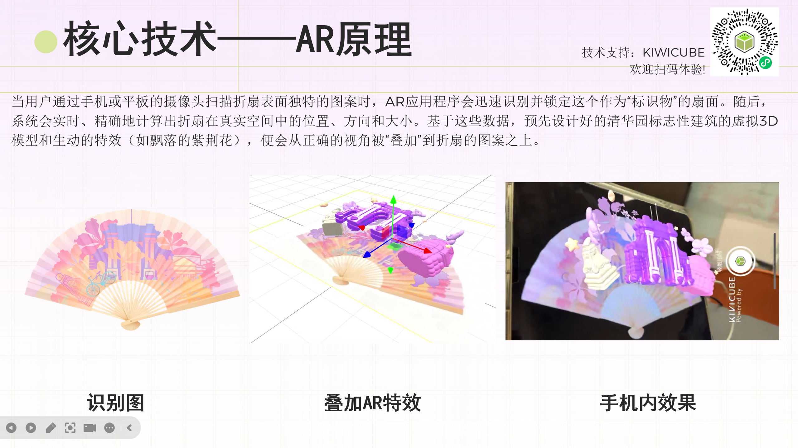

水木清风 · AR 系列折扇
SHUIMU QINGFENG — An AI-powered AR Souvenir
一次关于传统文创、AI 3D 与增强现实的跨媒介实验。
我尝试让一把实体折扇不再只是纪念品，而成为连接校园文化与数字内容的交互入口。用户通过手机识别扇面，即可看到清华标志性建筑与动态效果从实体图案中进入现实空间。

从校园建筑中，
重新提取一套视觉语言。

视觉设计取材于二校门、大礼堂、日晷等具有代表性的清华校园意象。
我没有直接复制建筑外观，而是通过几何概括、色彩重组与扇面构图，将熟悉的校园符号转译成更轻盈、年轻的系列视觉。
让二维图案，
从扇面进入三维空间。
为了让实体折扇进一步成为数字体验的载体，我将 AI 3D generation 引入了设计流程。
我使用 Tripo 生成项目所需的 3D assets，并将生成结果继续带入 AR 工作流，而不是把 AI 生成本身作为最终输出。
- 2D REFERENCE
- TRIPO
- 3D ASSET
- AR SCENE
- PHYSICAL × DIGITAL

AI generation wasn't the final output —
it became part of the making process.
AI 生成不是终点，而是创作工作流中的一个环节。
当实体纪念品，
成为数字体验的入口。
用户通过手机进入 AR 体验后，摄像头识别实体扇面的视觉标识，并持续追踪其位置、方向与尺度。
对应的 3D 建筑与动态效果被叠加到真实折扇上，让原本静态的校园纪念品获得新的空间叙事。

The fan is no longer only an object to keep,
but an interface to explore.
折扇不再只是被收藏的物件，也成为进入数字内容的界面。